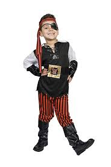

Inspired by a young boy's concern for the loss of pirate culture... a little about the pirates Inspired by kids and their passion for funloving good hearted pirate mischeif, we are an orginization looking to preseve the pirate culture. Lots more about pirates but for now a little halloween poem from We bask in light when morning comes, yet tremble in the night. Halloween must be the cause to give us such a fright. Ghosts and goblins haunt the streets where moans and chains abound. Ghouls and vampires lurk in shadows, scared of holy ground. Werewolves stalk unwary victims. Frankenstein is loose. Ogres, trolls and spectral zombies hanging by a noose, Gorgons with their "stoney" eyes and bats with leathery wings... Mummies wrapped in yellowed cloth with rotting flesh that clings, Pirates, gangsters, space invaders, just to name a few, All in search of "Tricks or Treats"(or just a head...or two). Beware the time when darkness comes. Be sure the door is locked. But most of all .... to just be safe ... keep lots of candy stocked. Happy Halloween https://hellopoetry.com/words/pirates/ Hello Poetry Pirates poems on Hello Poetry Pirates poetry:
